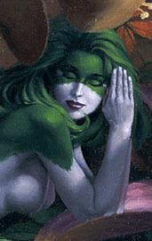

| Home | Greeting | Great land stories | Grot of poetry | Graphic album | Grandiose gadgets | Groan of the mind | Back | Next |
Страница 3.
И наслаждение! И слезы...
Ангел
Жемчужиной белой в окошко вкатилось
И вспыхнуло светом во мраке ночном,
Мне белое облако нынче явилось,
Наполнив пространство своим божеством.
И в дымке сией различать начинаю
Два белых, огромных, прекрасных крыла.
То Ангела Бог ниспослал мне из рая, -
Ты, в платье жемчужном на Землю сошла.
Тебя наяву никогда не видала,
Но словно давно я знакома с тобой.
Я знаю все, я тебя сразу узнала...
О, Господи! Лучше бы это со мной...
Вдруг душу мою переполнило что-то,
И тяжесть такая на сердце легла,
Что плакать от боли мне стало охота,
Но все же я боль эту превозмогла
И молвила: "Что же со мною случилось?!
Что так кипятит и волнует мне кровь?!"
- "Любовь моя это тебе сообщилась,
...Моя нерастраченная любовь," -
Твой голос небесный мне тихо ответил, -
"Любовь-то, она ведь у нас к одному.
Но ты еще много успеешь на свете,
...А мне это чувство уже ни к чему..."
...Я думала раньше, что даже Вселенной
Не хватит любви уместиться моей,
Но светом жемчужным твоим напоенна,
Я знаю: люблю теперь вдвое сильней.
1990г., июнь

Тот ювелир
Тот ювелир, он гений был!
Иначе как бы он добыл
Так много лучиков златых? -
Он выпросил у Солнца их.
Тот ювелир что сотворил!
Он каждый луч преобразил:
Какой-то изогнул волной,
В колечко превратил иной.
Тот ювелир не Бог ли был?!
Он чудо-шапку смастерил
Из этих маленьких лучей
И отдал голове твоей.
1990г., июль
Тихо опадают золотые листья...
Как они похожи на ладони, кисти!
Но на землю листья не хотят ложиться,
Хоть еще немножко в вальсе покружиться.
Меж деревьев стройных, величавых сосен
Золотые листья в танце водят осень.
Женщину как-будто, сердцу дорогую,
Нежно держат листья осень золотую.
Трепетно ладони милую ласкают.
И в костре осеннем от любви сгорают...
1990г., сентябрь
Ты любишь розы
Ты очень-очень любишь розы,
И ты мне даришь только их.
Они так далеки от прозы,
Но с ними неразлучен стих.
Ты не приемлешь те букеты,
В которых три цветка иль пять.
Вот если бы из роз планеты
Огромный океан создать!
Ты любишь розы: или много;
Или когда всего одна,
Такая роза, чтоб от Бога
Ей красота была дана.
И наслаждение! И слезы! -
Эти прекрасные цветы.
Ты очень-очень любишь розы!
...А я люблю, что любишь ты.
1990г., октябрь
Разрывает душу тишина.
Жжет нутро своим огнем луна.
Впилась в сердце острием звезда.
- Уплываю в никуда.
Не терзай так долго, мир ночной!
Забери скорей меня с собой!
Унеси на черном, на крыле.
- Мне не место на Земле.
1991г., июль
Я чувствую, как погружаюсь
В холодный мрак Небытия...
Еще и не в могиле я,
И светом уж не наслаждаюсь.
Я злое лезвие черты
Пересекла наполовину.
Пусть не сейчас я мир покину, -
Мне не нужны уже мечты.
Что грезилось мне впереди,
Вдруг оказалось за стеною,
Стеною серою, сплошною.
И нет ворот, куда войти.
И жизнь, и смерть... Из них сплетаясь,
Во мне натянута струна.
...Осталось мне чуть-чуть до дна,
Но Боже мой, я не спасаюсь.
1991г., 17 августа
| Top | Home | Greeting | Great land stories | Grot of poetry | Graphic album | Grandiose gadgets | Groan of the mind | Back | Next |